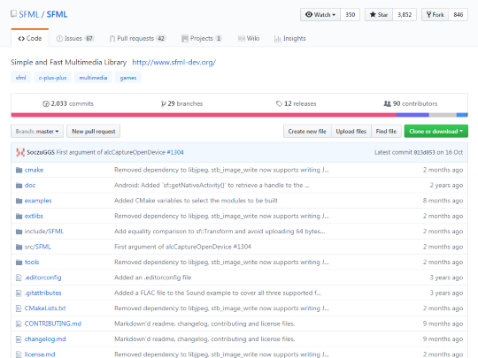

Личный опыт участия в разработке открытого программного обеспечения
В данном разделе курсовой работы я хочу рассказать про личный опыт участия в разработке открытого программного обеспечения.
В 2016 я писал небольшое приложения приложение для обработки данных на языке С++. Для визуализации было решено использовать мультимедийную библиотеку с открытым исходным кодом под названием SFML.
На ниже изображена домашняя страница этой библиотеке на сайте https://github.com/ — популярном месте размещения проектов с открытым программным обеспечением.
Именно через интерфейс этого сайта я и принял участие в разработке открытого программного обеспечения.
Шаг №1 — Обнаружение ошибки
Перед использованием библиотеки SFML в своем проекте, я изучил ее документацию. В описании функции закрывающей системный сокет я обнаружил грубую ошибку, искажающую суть использования данной функции.
Прежде чем исправлять найденную ошибку в исходном коде, я скопировал репозиторий SFML к себе в профиль. Сделал я это с помощью специальной кнопки «Fork».
Шаг №2 — Исправление ошибки
После этого можно исправлять обнаруженный баг в исходном коде. Все изменения будут сделаны только в вашей копии и не коснутся основного репозитория.
В файле по адресу include/SFML/Network/UdpSocket.hpp я заменил слово «available» на «unavailable» и добавил Enter перед началом следующего предложения. На рисунке 4 представлена первоначальная версия внесенных изменений.
Шаг №3 — Обсуждение исправлений
Теперь необходимо предложить разработчикам свою, исправленную версию исходного кода.
Чтобы разработчики увидели, внесенные вами изменения, необходимо создать так называемый pull-request. Каждый pull-request открывает новую тему для обсуждения предлагаемых изменений.
В открытой теме, в первом сообщении, я указал причину предлагаемых изменений. Отмечу, что все общение велось на английском языке.
К сожалению, предложенные изменения не понравилось одному из разработчиков. Однако он согласился, что указанная функция требует более подробной документации
Результаты участия
На ниже представлен окончательный, одобренный разработчиками вариант вносимых изменений. Всего было добавлено 3 строки, поясняющие работу функции unbind().

Через некоторое время, разработчики SFML произвели слияние моих изменений с основным репозиторием данным библиотеки. После этого я появился в списке пользователей, участвовавших в разработке библиотеки SFML
Теперь я смело могу добавлять строчку в резюме о том, что принимал участие в разработке библиотеки с открытым исходным кодом SFML.